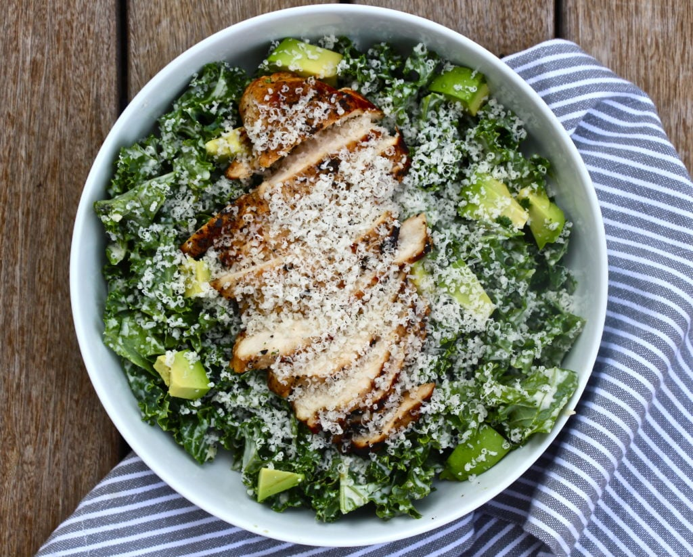

Kale Chicken Caesar Salad
I cherish the kale salad's verdant symphony, a feast for the soul. You either surrender to its embrace or turn away - yet I yield utterly. In those shadowy, emerald leaves, pulsing with life's elixir, my body whispers its ancient hunger, and this is the flourishing hymn I summon to soothe it. Kale, nature's crown jewel among earth's healing bounties, annointed with my own Caesar panacea - pure, luminous, alive - births a rapture both delectable and divine.

Prep Time: 20 minutes.
Cook Time: 20 minutes.
Serves 2.
Ingredients
For the Salad
- 1 bunch of green kale.
- 1/2 avocado, diced.
- 1/4 cup grated Parmesan cheese.
For the Caesar Dressing
- 1 egg (room temp).
- 1 cup of safflower oil
- 1/2 tsp kosher salt.
- 2 tsp Dijon mustard.
- Juice of 1 lemon.
- 6-8 flat anchovy filets in olive oil.
- 4 cloves garlic.
- 2 tbsp red wine vinegar.
For the Chicken
- 2-3 boneless, skinless chicken breasts.
- 2 tbsp olive oil.
- 2 tbsp lemon juice.
- 2 tbsp Worcestershire sauce.
- 1 tsp garlic powder.
- Salt and pepper to taste.
Instructions
- In a bowl or ziploc bag, combine all of the "for the chicken" ingredients together and toss so that the chicken is coated evenly. Set aside and allow to marinate for 15-30 minutes at room temperature.
- Preheat oven to 400 degrees.
- Meanwhile, let's make the caesar dressing: If your egg is chilled, place it in a cup of hot or very warm water for 3-5 minutes to bring it to room temperature.
- Place egg, kosher salt, and 1/4 cup of safflower oil in a food processor or blender, blend until well combined.
- Now, for the main event: turn your food processor or blender on and keep that blending as your very slowly pour in the remaining 3/4 cup of safflower oil in. When I say slowly pour, just keep a steady flow going as slow as you can possibly go. When you have completed this process (which should take about 3 minutes total) you will have a mayonnaise-like consistency.
- Now toss the anchovies, garlic, lemon juice, dijon mustard, and red wine vingear in with the mayo. Blend until smooth. Taste and add more salt and pepper if needed. You can even add more anchovies or red wine vinegar if you prefer. You make it yours! Set the dressing aside while you prepare your salad.
- Rinse the kale and pat it dry. Remove kale from the stem, then chop up the kale so that it is diced into bite-sized pieces. Place the chopped kale in a large bowl and set aside.
- Heat a cast iron or oven-safe skillet over medium-high heat. When hot, place chicken in the skillet, searing on both sides until they are lightly browned, approximately 3-4 minutes per side.
- Place the skillet into the preheated oven and let the chicken continue to cook all the way through; depending on the thickness of the chicken this should take 10-15 minutes.
- While your chicken is cooking, pour desired amount of the Caesar dressing over the chopped kale, toss to coat evenly and set aside to let the kale marinate in the dressing - this allows the kale to soften up a bit so it doesn't have too much of a bite to it.
- Remove chicken from the oven and transfer to a cutting board. Let rest on the cutting board for a few minutes to allow juices to settle back into the chicken.
- After it has rested, slice the chicken against the grain into thin pieces. Divide the kale among 2 bowls, then the avocado. Top with sliced chicken breast and then top it all off with some grated parmesan cheese.
- Serve and enjoy!